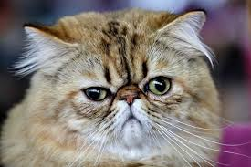
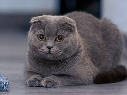

Her er det enda flere katteraser!!!
Denne katten har et ganske rart fjes, og masse pels! Nemlig Persisk katt!

Den Persiske katten er en langhåret katt. De er ofte kjent for sin korte og rare nese. De er rolige og trives best inne. De kan bli opp til 15 år gammel og de stammer fra Iran.
Fra en søt katt til en annen, her har vi: Skotsk fold!

Skotsk fold har en gøy genetisk mutasjon, som gjør slik at ørene bøye seg ned mot fronten av hodet, altså en liten "fold" i ørene, men de kan fortsatt høre helt fint. En hann kan veie opp til 6 kg, og en hunn opp till 4 kg. De er ofte late og tilbakelent. Som navnet sier er de fra Skottland.
Hvis du gidder så har jeg to til katteraser som jeg vil vise deg.